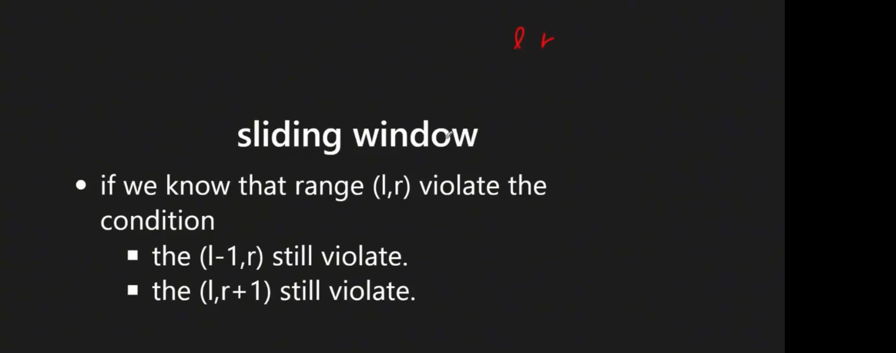
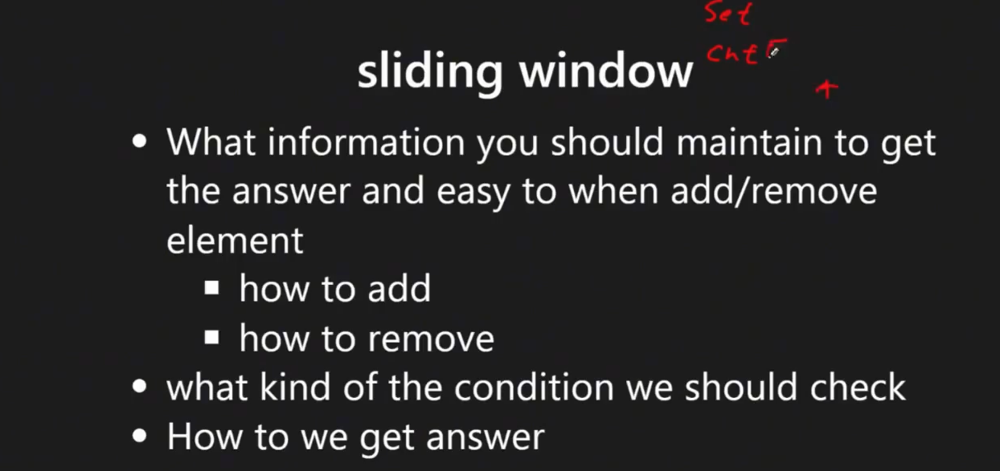
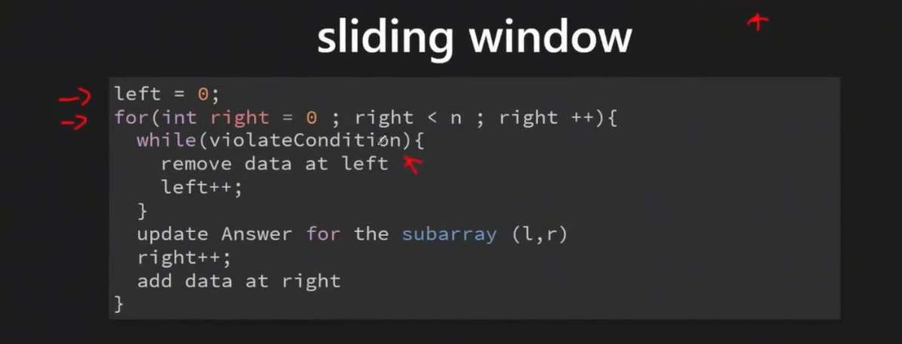

Sliding Window
Last updated: Apr 15, 2026Table of Contents
- Overview
- Key Properties
- When to Use Sliding Window
- Quick Decision Guide
- References
- 0) Concept
- Core Components
- 0-1) Problem Categories
- 0-2) Core Algorithms & Data Structures
- 1) Sliding Window Templates & Patterns
- 1.1) Template Comparison
- 1.2) Universal Sliding Window Template
- 1.3) Template 1: Fixed Size Window
- 1.4) Template 2: Variable Size Window (Maximum Length)
- 1.5) Template 3: Variable Size Window (Minimum Length)
- 1.6) Template 4: Counting Subarrays
- 1.7) Technique: Exactly K Problems (At Most K Transformation)
- 2) Problems by Template Pattern
- 2.1) Template Classification Guide
- 2.2) Template Selection Strategy
- 3) Detailed LeetCode Examples
- 3.1) Fixed Size Window Examples
- 3.2) Variable Size Window Examples
- 3.3) Counting Subarrays Examples
- 3.4) Minimum Window Examples
- 3.5) Advanced Examples
- LC 1838 Frequency of the Most Frequent Element
- 4) Core Patterns & Quick Reference
- 4.1) Template Quick Reference
- 4.2) Common Patterns & Tricks
- 4.3) Problem-Solving Steps
- 4.4) Common Mistakes & Tips
- 4.5) Time & Space Complexity Analysis
- 4.6) Related Algorithms
- 4.7) Additional Template Examples (Advanced Java Reference)
Sliding Window
Overview
Sliding Window is a technique that uses two pointers to maintain a “window” over arrays or strings, expanding and contracting to find optimal solutions efficiently.
Key Properties
- Time Complexity: O(n) - each element is visited at most twice
- Space Complexity: O(1) for pointers, O(k) for window state
- Core Idea: Maintain a window [left, right] that slides over the data structure
- Two-Phase Process:
- Expand: Move right pointer to grow window
- Contract: Move left pointer to shrink window when invalid
When to Use Sliding Window
- Subarray/Substring Problems: Finding optimal subarrays with specific properties
- Window-based Constraints: Problems involving fixed or variable window sizes
- Optimization: Min/max length, count, or sum within constraints
- Character/Element Tracking: Problems requiring frequency counting
Quick Decision Guide
| Problem Type | Template | Key Pattern | Examples |
|---|---|---|---|
| Find exact window size | Fixed Size | for i with size tracking |
LC 438, 567 |
| Find maximum valid window | Variable Max | for-while expand-contract |
LC 3, 424 |
| Find minimum valid window | Variable Min | while-while contract-expand |
LC 76, 209 |
| Count valid subarrays | Counting | count += right-left+1 |
LC 713, 992 |
| Exactly K distinct/unique | At-Most Subtraction | atMostK(k) - atMostK(k-1) |
LC 992, 340 |
How to read: Start with your problem goal (maximum/minimum/count/exact), then choose the matching template.
References
0) Concept
Core Components
- Two Pointers:
leftandrightto define window boundaries - Loop Structure:
while-while: Outer loop expands, inner loop contractsfor-while: For loop expands, while loop contracts- Key Insight: 1st loop finds acceptable solution, 2nd loop optimizes to find the best
- Window State: Track elements, counts, or sums within current window
- Validity Condition: Define when window is valid/invalid



0-1) Problem Categories
Fixed Size Window
- Description: Window size is predetermined and constant
- Examples: LC 438 (Find All Anagrams), LC 567 (Permutation in String)
- Pattern: Maintain exact window size, slide one position at a time
Variable Size Window - Maximum
- Description: Find maximum window size satisfying constraints
- Examples: LC 3 (Longest Substring), LC 424 (Character Replacement)
- Pattern: Expand until invalid, record max, then contract
Variable Size Window - Minimum
- Description: Find minimum window size satisfying constraints
- Examples: LC 209 (Minimum Subarray Sum), LC 76 (Minimum Window Substring)
- Pattern: Contract until invalid, record min, then expand
Subarray Counting
- Description: Count subarrays/substrings meeting criteria
- Examples: LC 713 (Subarray Product), LC 992 (Subarrays with K Different)
- Pattern: For each right position, count valid left positions
String Matching (Hash-based)
- Description: Track character frequencies in window
- Examples: LC 567 (Permutation), LC 438 (Anagrams), LC 76 (Window Substring)
- Pattern: Use HashMap/Counter to track character counts
0-2) Core Algorithms & Data Structures
- Techniques: Two pointers, sliding window, frequency counting
- Data Structures: HashMap, Counter, Set, Array
- Helper Tools: Collections.Counter (Python), HashMap.getOrDefault (Java)
1) Sliding Window Templates & Patterns
1.1) Template Comparison
| Template Type | Use Case | Loop Structure | When to Use |
|---|---|---|---|
| Fixed Size | Exact window size | for with size management |
Anagrams, permutations, k-size problems |
| Variable Max | Maximum valid window | for-while (expand-contract) |
Longest substring problems |
| Variable Min | Minimum valid window | while-while (contract-expand) |
Minimum window problems |
| Counting | Count valid subarrays | for with counting logic |
Subarray counting problems |
1.2) Universal Sliding Window Template
# Python Universal Template
def sliding_window(s, condition):
# Initialize window state
left = 0
window_state = {} # or Counter, set, etc.
result = initialize_result()
# Expand window with right pointer
for right in range(len(s)):
# Add current element to window
update_window_state(s[right])
# Contract window while invalid
while not is_valid(window_state):
# Remove leftmost element
remove_from_window(s[left])
left += 1
# Update result with current valid window
result = update_result(result, left, right)
return result
// Java Universal Template
public ResultType slidingWindow(String s) {
// Initialize window state
int left = 0;
Map<Character, Integer> window = new HashMap<>();
ResultType result = initializeResult();
// Expand window with right pointer
for (int right = 0; right < s.length(); right++) {
char rightChar = s.charAt(right);
window.put(rightChar, window.getOrDefault(rightChar, 0) + 1);
// Contract window while invalid
while (!isValid(window)) {
char leftChar = s.charAt(left);
window.put(leftChar, window.get(leftChar) - 1);
if (window.get(leftChar) == 0) {
window.remove(leftChar);
}
left++;
}
// Update result with current valid window
result = updateResult(result, left, right);
}
return result;
}
1.3) Template 1: Fixed Size Window
Use Cases: Anagrams, permutations, k-length substrings Pattern: Maintain exact window size, slide one position at a time
# Fixed Size Window Template
def fixed_window(s, k):
window = {}
result = []
for i in range(len(s)):
# Add current element to window
window[s[i]] = window.get(s[i], 0) + 1
# Remove element that's outside window
if i >= k:
left_char = s[i - k]
window[left_char] -= 1
if window[left_char] == 0:
del window[left_char]
# Process window when it reaches target size
if i >= k - 1:
# Check condition and update result
if meets_condition(window):
result.append(i - k + 1)
return result
// Fixed Size Window Template - Java
public List<Integer> fixedWindow(String s, int k) {
Map<Character, Integer> window = new HashMap<>();
List<Integer> result = new ArrayList<>();
for (int i = 0; i < s.length(); i++) {
// Add current element
char cur = s.charAt(i);
window.put(cur, window.getOrDefault(cur, 0) + 1);
// Remove element outside window
if (i >= k) {
char leftChar = s.charAt(i - k);
window.put(leftChar, window.get(leftChar) - 1);
if (window.get(leftChar) == 0) {
window.remove(leftChar);
}
}
// Process when window is full
if (i >= k - 1 && meetsCondition(window)) {
result.add(i - k + 1);
}
}
return result;
}
1.4) Template 2: Variable Size Window (Maximum Length)
Use Cases: Longest substring problems, maximum valid window Pattern: Expand until invalid, record max, then contract
# Variable Size Window (Maximum) Template
def max_window(s):
left = 0
window = {}
max_len = 0
for right in range(len(s)):
# Expand window
window[s[right]] = window.get(s[right], 0) + 1
# Contract while invalid
while not is_valid(window):
window[s[left]] -= 1
if window[s[left]] == 0:
del window[s[left]]
left += 1
# Update maximum length
max_len = max(max_len, right - left + 1)
return max_len
1.5) Template 3: Variable Size Window (Minimum Length)
Use Cases: Minimum window substring, smallest valid window Pattern: Expand until valid, record min, then try to contract
# Variable Size Window (Minimum) Template
def min_window(s, target):
left = 0
window = {}
target_count = Counter(target)
min_len = float('inf')
result = ""
for right in range(len(s)):
# Expand window
window[s[right]] = window.get(s[right], 0) + 1
# Contract while valid
while is_valid(window, target_count):
# Update minimum
if right - left + 1 < min_len:
min_len = right - left + 1
result = s[left:right + 1]
# Try to shrink
window[s[left]] -= 1
if window[s[left]] == 0:
del window[s[left]]
left += 1
return result if min_len != float('inf') else ""
1.6) Template 4: Counting Subarrays
Use Cases: Count subarrays meeting criteria Pattern: For each right position, count valid left positions
# Subarray Counting Template
def count_subarrays(nums, condition):
left = 0
count = 0
window_state = initialize_state()
for right in range(len(nums)):
# Add current element
update_window_state(nums[right])
# Shrink window while invalid
while not is_valid(window_state):
remove_from_window(nums[left])
left += 1
# Count valid subarrays ending at 'right'
count += right - left + 1
return count
1.7) Technique: Exactly K Problems (At Most K Transformation)
Core Insight: “Exactly K” problems are often difficult to solve directly, but can be transformed using the powerful formula:
Exactly K = At Most K - At Most (K-1)
Why This Works:
At Most K: All subarrays with ≤ K distinct/count
At Most (K-1): All subarrays with ≤ K-1 distinct/count
Difference: Only subarrays with EXACTLY K distinct/count
Proof by Example:
Array: [1, 2, 1, 2, 3]
K = 2 (exactly 2 distinct integers)
At Most 2 distinct:
[1], [1,2], [1,2,1], [1,2,1,2], [2], [2,1], [2,1,2], [1], [1,2], [2], [2,3], [3]
Count = 12
At Most 1 distinct:
[1], [2], [1], [2], [3]
Count = 5
Exactly 2 distinct = 12 - 5 = 7 ✓
[1,2], [1,2,1], [1,2,1,2], [2,1], [2,1,2], [1,2], [2,3]
Template: At Most K Pattern
# Universal At Most K Template
def at_most_k(nums, k):
"""
Count subarrays with AT MOST K distinct/elements/condition.
Time: O(n)
Space: O(k) for tracking state
Key: Window is valid when condition ≤ k
"""
left = 0
count = 0
window_map = {} # Track state (frequency, distinct, etc.)
for right in range(len(nums)):
# Expand window: add nums[right]
window_map[nums[right]] = window_map.get(nums[right], 0) + 1
# Shrink window while invalid (> k)
while len(window_map) > k: # Or other condition > k
window_map[nums[left]] -= 1
if window_map[nums[left]] == 0:
del window_map[nums[left]]
left += 1
# Count all valid subarrays ending at 'right'
# All subarrays from [left, right], [left+1, right], ..., [right, right]
count += right - left + 1
return count
# Transform to Exactly K
def exactly_k(nums, k):
"""
Count subarrays with EXACTLY K distinct/elements/condition.
Time: O(n) - at_most_k called twice
Space: O(k)
"""
if k == 0:
return 0
# Exactly K = At Most K - At Most (K-1)
return at_most_k(nums, k) - at_most_k(nums, k - 1)
Full Example: LC 992 - Subarrays with K Different Integers
Problem: Count subarrays with exactly K distinct integers.
# Python - LC 992 Subarrays with K Different Integers
def subarraysWithKDistinct(nums, k):
"""
Count subarrays with exactly K distinct integers.
Time: O(n)
Space: O(k)
Key: Use Exactly K = At Most K - At Most (K-1) transformation
"""
def at_most_k_distinct(k):
"""Count subarrays with at most K distinct integers."""
left = 0
count = 0
freq = {}
for right in range(len(nums)):
# Add right element
freq[nums[right]] = freq.get(nums[right], 0) + 1
# Shrink while > k distinct
while len(freq) > k:
freq[nums[left]] -= 1
if freq[nums[left]] == 0:
del freq[nums[left]]
left += 1
# Count subarrays ending at right
count += right - left + 1
return count
# Edge case
if k == 0:
return 0
# Exactly K = At Most K - At Most (K-1)
return at_most_k_distinct(k) - at_most_k_distinct(k - 1)
# Example:
# nums = [1,2,1,2,3], k = 2
# at_most_k(2) = 12
# at_most_k(1) = 5
# exactly_k(2) = 12 - 5 = 7 ✓
// Java - LC 992 Subarrays with K Different Integers
/**
* time = O(N)
* space = O(K)
*/
public int subarraysWithKDistinct(int[] nums, int k) {
// Exactly K = At Most K - At Most (K-1)
return atMostK(nums, k) - atMostK(nums, k - 1);
}
private int atMostK(int[] nums, int k) {
if (k == 0) return 0;
int left = 0;
int count = 0;
Map<Integer, Integer> freq = new HashMap<>();
for (int right = 0; right < nums.length; right++) {
// Add right element
freq.put(nums[right], freq.getOrDefault(nums[right], 0) + 1);
// Shrink while > k distinct
while (freq.size() > k) {
freq.put(nums[left], freq.get(nums[left]) - 1);
if (freq.get(nums[left]) == 0) {
freq.remove(nums[left]);
}
left++;
}
// Count subarrays ending at right
count += right - left + 1;
}
return count;
}
Visual Example: Why “At Most K - At Most (K-1)” Works
Array: [1, 2, 1, 3], K = 2 (exactly 2 distinct)
At Most 2 Distinct:
Index 0 (1): [1] ✓ → count = 1
Index 1 (2): [2] ✓, [1,2] ✓ → count = 2
Index 2 (1): [1] ✓, [2,1] ✓, [1,2,1] ✓ → count = 3
Index 3 (3): [3] ✓, [1,3] ✓, but NOT [2,1,3] ❌ → count = 2
(window shrinks to [1,3])
Total At Most 2: 1 + 2 + 3 + 2 = 8
At Most 1 Distinct:
Index 0 (1): [1] ✓ → count = 1
Index 1 (2): [2] ✓, but NOT [1,2] ❌ → count = 1
(window shrinks to [2])
Index 2 (1): [1] ✓, but NOT [2,1] ❌ → count = 1
(window shrinks to [1])
Index 3 (3): [3] ✓, but NOT [1,3] ❌ → count = 1
(window shrinks to [3])
Total At Most 1: 1 + 1 + 1 + 1 = 4
Exactly 2 Distinct = 8 - 4 = 4 ✓
The 4 subarrays with exactly 2 distinct:
[1,2], [1,2,1], [2,1], [1,3]
Classic Problems Using This Technique
| Problem | LC# | Difficulty | Transformation | Key Insight |
|---|---|---|---|---|
| Subarrays with K Different Integers | 992 | Hard | Exactly K distinct = atMost(K) - atMost(K-1) | Core example |
| Count Nice Subarrays | 1248 | Medium | Exactly K odds = atMost(K) - atMost(K-1) | Transform odd→1, even→0 |
| Binary Subarrays With Sum | 930 | Medium | Exactly sum K = atMost(K) - atMost(K-1) | Subarray sum |
| Longest Substring with At Most K Distinct | 340 | Medium | Direct atMost(K) for max length | No subtraction needed |
| Fruits Into Baskets | 904 | Medium | atMost(2) distinct for max length | Simplified K=2 |
| Max Consecutive Ones III | 1004 | Medium | atMost(K) zeros for max length | Count zeros ≤ K |
Pattern Recognition: When to Use This Technique
Use “Exactly K” transformation when you see:
✅ "exactly K distinct/different"
✅ "exactly K times"
✅ "exactly K occurrences"
✅ "subarrays with exactly K ..."
✅ COUNTING problems (not max/min length)
Direct sliding window works when:
✅ "at most K"
✅ "maximum length with ≤ K"
✅ "minimum length with ≥ K"
✅ "longest substring with at most K"
Common Mistakes
1. Forgetting k=0 Edge Case:
# Wrong: Doesn't handle k=0
def exactly_k(nums, k):
return at_most_k(nums, k) - at_most_k(nums, k - 1)
# at_most_k(nums, -1) may fail!
# Right: Handle k=0 explicitly
def exactly_k(nums, k):
if k == 0:
return 0
return at_most_k(nums, k) - at_most_k(nums, k - 1)
2. Using Wrong Approach for Max/Min Length:
# Wrong: Using "exactly K" transformation for max length
def longest_k_distinct(s, k):
# This gives COUNT, not LENGTH!
return at_most_k(s, k) - at_most_k(s, k - 1) ❌
# Right: Direct at_most_k for max length
def longest_k_distinct(s, k):
# Track max window size during at_most_k
return at_most_k_max_length(s, k) ✓
3. Confusing Count vs Length:
# For COUNTING subarrays: use right - left + 1
count += right - left + 1
# For MAX LENGTH: track max window size
max_length = max(max_length, right - left + 1)
Interview Tips
1. Recognition:
Interviewer: "Count subarrays with exactly K ..."
→ Think: "Exactly K = At Most K - At Most (K-1)"
Interviewer: "Find longest substring with at most K ..."
→ Think: "Direct sliding window, no subtraction needed"
2. Complexity Analysis:
Time: O(n) - each element added once, removed at most once in each pass
Total: 2 passes × O(n) = O(n)
Space: O(k) - HashMap stores at most K distinct elements
3. Template Code to Memorize:
def exactly_k(nums, k):
def at_most_k(limit):
left = 0
count = 0
window = {}
for right in range(len(nums)):
window[nums[right]] = window.get(nums[right], 0) + 1
while len(window) > limit:
window[nums[left]] -= 1
if window[nums[left]] == 0:
del window[nums[left]]
left += 1
count += right - left + 1
return count
if k == 0:
return 0
return at_most_k(k) - at_most_k(k - 1)
4. Talking Points:
- “Direct ‘exactly K’ is hard because window validity changes non-monotonically”
- “At most K is monotonic - once valid, stays valid until we shrink”
- “Subtracting at most (K-1) removes all overcounting”
- “This transforms a hard problem into two medium problems”
Advanced: Why Direct “Exactly K” is Hard
Problem with direct approach:
# Naive attempt (WRONG!)
def exactly_k_direct(nums, k):
left = 0
count = 0
window = {}
for right in range(len(nums)):
window[nums[right]] = window.get(nums[right], 0) + 1
# When to shrink? This is tricky!
# If len(window) > k: shrink (too many distinct)
# If len(window) < k: can't count yet (too few distinct)
# If len(window) == k: count, but should we shrink?
# If we shrink when == k, we might miss valid subarrays
# If we don't shrink, we might count invalid subarrays
# There's no clean condition! ❌
return count
Why “at most K” works:
# Window validity is monotonic:
# - If window is valid (≤ K), all sub-windows are valid
# - If window becomes invalid (> K), shrink until valid
# - Clear shrinking condition: while len(window) > k
# This monotonic property makes sliding window perfect!
Mathematical proof of transformation:
Let S(k) = set of all subarrays with at most k distinct elements
S(2) = {[1], [1,2], [1,2,1], [2], [2,1], [1], [1,3], [3], ...}
S(1) = {[1], [2], [1], [3], ...} (only single-element subarrays)
S(2) \ S(1) = subarrays in S(2) but not in S(1)
= subarrays with MORE than 1 but AT MOST 2 distinct
= subarrays with EXACTLY 2 distinct ✓
Generalized: S(k) \ S(k-1) = subarrays with exactly k distinct
2) Problems by Template Pattern
2.1) Template Classification Guide
Fixed Size Window Problems
| Problem | LC # | Key Technique | Difficulty |
|---|---|---|---|
| Find All Anagrams in a String | 438 | Character frequency matching | Medium |
| Permutation in String | 567 | Character frequency matching | Medium |
| Maximum Average Subarray I | 643 | Fixed window sum | Easy |
| Contains Duplicate II | 219 | Fixed window with HashSet | Easy |
| Maximum Number of Vowels | 1456 | Fixed window counting | Medium |
Variable Size - Maximum Length
| Problem | LC # | Key Technique | Difficulty |
|---|---|---|---|
| Longest Substring Without Repeating Characters | 3 | Character uniqueness tracking | Medium |
| Longest Repeating Character Replacement | 424 | Frequency + max character count | Medium |
| Max Consecutive Ones III | 1004 | K flips constraint | Medium |
| Longest Substring with At Most K Distinct Characters | 340 | Distinct character counting | Medium |
| Longest Substring with At Most Two Distinct Characters | 159 | Two distinct constraint | Medium |
Variable Size - Minimum Length
| Problem | LC # | Key Technique | Difficulty |
|---|---|---|---|
| Minimum Window Substring | 76 | Character coverage tracking | Hard |
| Minimum Size Subarray Sum | 209 | Running sum comparison | Medium |
| Smallest Subarray with Sum ≥ K | 862 | Prefix sum + deque | Hard |
| Minimum Window with Characters | 1176 | Diet plan constraint | Hard |
Counting Subarrays
| Problem | LC # | Key Technique | Difficulty |
|---|---|---|---|
| Subarray Product Less Than K | 713 | Product constraint | Medium |
| Subarrays with K Different Integers | 992 | Exactly K = At most K - At most (K-1) | Hard |
| Number of Subarrays with Bounded Maximum | 795 | Bounded value constraint | Medium |
| Count Number of Nice Subarrays | 1248 | Odd number counting | Medium |
Advanced Sliding Window
| Problem | LC # | Key Technique | Difficulty |
|---|---|---|---|
| Sliding Window Maximum | 239 | Monotonic deque | Hard |
| Sliding Window Median | 480 | Two heaps | Hard |
| Minimum Swaps to Group All 1’s Together | 1151 | Optimization with fixed window | Medium |
| Grumpy Bookstore Owner | 1052 | State change optimization | Medium |
2.2) Template Selection Strategy
Problem Analysis Flowchart:
1. Is window size fixed?
├── YES → Use Fixed Size Template
└── NO → Continue to 2
2. Are you finding maximum length?
├── YES → Use Variable Max Template
└── NO → Continue to 3
3. Are you finding minimum length?
├── YES → Use Variable Min Template
└── NO → Continue to 4
4. Are you counting subarrays?
├── YES → Use Counting Template
└── NO → Use custom approach
3) Detailed LeetCode Examples
3.1) Fixed Size Window Examples
LC 567: Permutation in String (Template: Fixed Size)
// java
// LC 567
// V0
// IDEA: HASHMAP + SLIDING WINDOW (fixed by gpt)
public boolean checkInclusion(String s1, String s2) {
if (!s1.isEmpty() && s2.isEmpty()) {
return false;
}
if (s1.equals(s2)) {
return true;
}
/** NOTE !!!
*
* we init 2 map, one for s1 counter, the other one as track `s2 sub str counter`
*/
Map<String, Integer> map1 = new HashMap<>();
Map<String, Integer> map2 = new HashMap<>();
for (String x : s1.split("")) {
String k = String.valueOf(x);
map1.put(x, map1.getOrDefault(k, 0) + 1);
}
// 2 pointers (for s2)
/** NOTE !!!
*
* we have 2 pointers (for s2) that can track character cnt in s2 within l, r pointers
*/
int l = 0;
for (int r = 0; r < s2.length(); r++) {
String val = String.valueOf(s2.charAt(r));
map2.put(val, map2.getOrDefault(val, 0) + 1);
/** NOTE !!!
*
* we use below trick to
*
* -> 1) check if `new reached s2 val` is in s1 map
* -> 2) check if 2 map are equal
*
* -> so we have more simple code, and clean logic
*/
if (map2.equals(map1)) {
return true;
}
/**
* NOTE !!!
*
* If the window size exceeds the size of s1, move the left pointer
* -> means the `permutation str in s2 of s1` IS NOT FOUND YET,
* -> in this case, we need to move s2 left pointer, and update tracking map
*/
if ((r - l + 1) >= s1.length()) {
// update map
String leftVal = String.valueOf(s2.charAt(l));
map2.put(leftVal, map2.get(leftVal) - 1);
/**
* NOTE !!!
*
* if can't find permutation at current window ([l,r]),
* then we move left pointer 1 idx (e.g. l += 1)
* for moving and checking next window
*/
l += 1;
if (map2.get(leftVal) == 0) {
map2.remove(leftVal);
}
}
}
return false;
}
# LC 567 Permutation in String
# V0
import collections
class Solution(object):
def checkInclusion(self, s1, s2):
l1, l2 = len(s1), len(s2)
c1 = collections.Counter(s1)
c2 = collections.Counter()
p = q = 0
while q < l2:
c2[s2[q]] += 1
if c1 == c2:
return True
q += 1
if q - p + 1 > l1:
c2[s2[p]] -= 1
if c2[s2[p]] == 0:
del c2[s2[p]]
p += 1
return False
LC 438: Find All Anagrams in a String (Template: Fixed Size)
// LC 438
// V0
// IDEA: HASHMAP + 2 POINTERS (fixed by gpt)
public List<Integer> findAnagrams(String s, String p) {
List<Integer> res = new ArrayList<>();
// edge
if (s == null || p == null || s.isEmpty() || p.isEmpty() || p.length() > s.length()) {
return res;
}
if (s.equals(p)) {
res.add(0);
return res;
}
// init p map
Map<String, Integer> p_map = new HashMap<>();
for (String x : p.split("")) {
p_map.put(x, p_map.getOrDefault(x, 0) + 1);
}
String[] s_arr = s.split("");
Map<String, Integer> s_map = new HashMap<>();
int l = 0;
for (int r = 0; r < s_arr.length; r++) {
String key = s_arr[r];
s_map.put(key, s_map.getOrDefault(key, 0) + 1);
/**
* NOTE !!!
*
* need `while loop` below
* so we can `shrink` left pointer (window)
* to make the sub string size equals to `p`
*
* (could be `if` logic as well here)
* (e.g. if (r - l + 1 > p.length()) )
*/
// shrink window if size > p.length()
while (r - l + 1 > p.length()) {
String leftKey = s_arr[l];
/**
* NOTE !!!
*
* need to update s_map
*/
s_map.put(leftKey, s_map.get(leftKey) - 1);
if (s_map.get(leftKey) == 0) {
s_map.remove(leftKey);
}
l++;
}
/**
* NOTE !!!
*
* if same size, compare s_map, and p_map
*/
// if same size, compare
if (r - l + 1 == p.length() && isEqaual(p_map, s_map)) {
res.add(l);
}
}
return res;
}
private boolean isEqaual(Map<String, Integer> p_map, Map<String, Integer> s_map) {
if (p_map.size() != s_map.size()) {
return false;
}
for (String k : p_map.keySet()) {
if (!s_map.containsKey(k) || !s_map.get(k).equals(p_map.get(k))) {
return false;
}
}
return true;
}
// V0-1
// IDEA: HASHMAP + SLIDE WINDOW (gpt)
/**
* Why `slide window` is needed trick for this problem?
*
*
* Yes 👍 the sliding window (or two-pointer) is the needed trick for that group of problems like “longest substring without repeating characters”.
*
* Here’s why:
* • A brute force way would check all substrings → O(n²) or worse.
* • But with a sliding window, you keep a “window” [left, right] over the string/array and expand right step by step.
* • If the constraint is violated (like duplicate chars appear, or the sum is too large), you shrink from the left until it’s valid again.
* • This way each index moves at most once → O(n) total.
*
* That’s the exact “trick” behind those problems. The hard part is usually:
* 1. What condition makes the window valid/invalid? (duplicate chars, sum > k, etc.)
* 2. When to update the answer? (on every valid window, or only when shrinking).
*
*/
public List<Integer> findAnagrams_0_1(String s, String p) {
List<Integer> res = new ArrayList<>();
if (s == null || p == null || s.isEmpty() || p.isEmpty() || p.length() > s.length()) {
return res;
}
// Build p_map (pattern frequency)
Map<String, Integer> p_map = new HashMap<>();
for (String x : p.split("")) {
p_map.put(x, p_map.getOrDefault(x, 0) + 1);
}
Map<String, Integer> s_map = new HashMap<>();
String[] s_arr = s.split("");
int window = p.length();
for (int i = 0; i < s_arr.length; i++) {
String val = s_arr[i];
/** NOTE !!!
*
* we `add` element to s_amp anyway,
* via `sliding window` we DON'T need to handle cases
* such as 1) if the element in p_map, 2) if the element cnt > the one in p_map ...
*
* -> via `sliding window`, we can simply ONLY compare
* if s_map and p_map qre equals when `sliding window` size equals to p size
*/
// add current char to s_map
s_map.put(val, s_map.getOrDefault(val, 0) + 1);
/** NOTE !!!
*
* sliding window
*/
// maintain sliding window size
if (i >= window) {
String leftChar = s_arr[i - window];
if (s_map.get(leftChar) == 1) {
s_map.remove(leftChar);
} else {
s_map.put(leftChar, s_map.get(leftChar) - 1);
}
}
// compare maps only when window size matches
if (i >= window - 1 && isEqual(p_map, s_map)) {
res.add(i - window + 1);
}
}
return res;
}
private boolean isEqual(Map<String, Integer> p_map, Map<String, Integer> s_map) {
if (p_map.size() != s_map.size()) {
return false;
}
for (String k : p_map.keySet()) {
if (!s_map.containsKey(k) || !p_map.get(k).equals(s_map.get(k))) {
return false;
}
}
return true;
}
# LC 438 Find All Anagrams in a String
# V0
# IDEA : SLIDING WINDOW + collections.Counter()
class Solution(object):
def findAnagrams(self, s, p):
"""
:type s: str
:type p: str
:rtype: List[int]
"""
ls, lp = len(s), len(p)
cp = collections.Counter(p)
cs = collections.Counter()
ans = []
for i in range(ls):
cs[s[i]] += 1
if i >= lp:
cs[s[i - lp]] -= 1
### BE AWARE OF IT
if cs[s[i - lp]] == 0:
del cs[s[i - lp]]
if cs == cp:
ans.append(i - lp + 1)
return ans
3.2) Variable Size Window Examples
LC 3: Longest Substring Without Repeating Characters (Template: Variable Max)
# LC 003 Longest Substring Without Repeating Characters
# V0'
# IDEA : SLIDING WINDOW + DICT
# -> use a hash table (d) record visited "element" (e.g. : a,b,c,...)
# (but NOT sub-string)
class Solution(object):
def lengthOfLongestSubstring(self, s):
d = {}
# left pointer
l = 0
res = 0
# right pointer
for r in range(len(s)):
"""
### NOTE : we deal with "s[r] in d" case first
### NOTE : if already visited, means "repeating"
# -> then we need to update left pointer (l)
"""
if s[r] in d:
"""
NOTE !!! this
-> via max(l, d[s[r]] + 1) trick,
we can get the "latest" idx of duplicated s[r], and start from that one
"""
l = max(l, d[s[r]] + 1)
# if not visited yet, record the alphabet
# and re-calculate the max length
d[s[r]] = r
res = max(res, r -l + 1)
return res
# V0'
# IDEA : SLIDING WINDOW + DICT
# -> use a hash table (d) record visited "element" (e.g. : a,b,c,...)
# (but NOT sub-string)
class Solution(object):
def lengthOfLongestSubstring(self, s):
d = {}
# left pointer
l = 0
res = 0
# right pointer
for r in range(len(s)):
"""
### NOTE : we deal with "s[r] in d" case first
### NOTE : if already visited, means "repeating"
# -> then we need to update left pointer (l)
"""
if s[r] in d:
"""
NOTE !!! this
-> via max(l, d[s[r]] + 1) trick,
we can get the "latest" idx of duplicated s[r], and start from that one
"""
l = max(l, d[s[r]] + 1)
# if not visited yet, record the alphabet
# and re-calculate the max length
d[s[r]] = r
res = max(res, r -l + 1)
return res
// java
// V0
// IDEA : SLIDING WINDOW + HASH SET
public int lengthOfLongestSubstring(String s) {
if (s.equals("")){
return 0;
}
if (s.equals(" ")){
return 1;
}
if (s.length() == 1){
return 1;
}
int ans = 0;
char[] s_array = s.toCharArray();
for (int i = 0; i < s_array.length-1; i++){
int j = i;
Set<String> set = new HashSet<String>();
while (j < s_array.length){
String cur = String.valueOf(s_array[j]);
if (set.contains(cur)){
ans = Math.max(ans, set.size());
break;
}else{
set.add(cur);
ans = Math.max(ans, set.size());
j += 1;
}
}
}
return ans;
}
3.3) Counting Subarrays Examples
LC 713: Subarray Product Less Than K (Template: Counting)
# LC 713 Subarray Product Less Than K
# V0
# IDEA : SLIDING WINDOW
# MAINTAIN 2 INDEX : left, i, SO THE SLIDING WINDOW IS : [left, i]
# CHECK IF THE PRODUCT OF ALL DIGITS IN THE WINDOW [left, i] < k
# IF NOT, REMOVE CURRENT LEFT, AND DO LEFT ++
# REPEAT ABOVE PROCESS AND GO THOROUGH ALL ARRAY
class Solution:
def numSubarrayProductLessThanK(self, nums, k):
# init values
product = 1
i = 0
result = 0
for j, num in enumerate(nums):
### NOTE : we get product first
product *= num
### NOTE : the while loop condition : product >= k
# -> if product >= k, we do the corresponding op
while i <= j and product >= k:
### NOTE this trick
# -> divided the number back, since this number already make the product > k
product = product // nums[i]
### NOTE : move i to 1 right index
i += 1
### NOTE : , the number of intervals with subarray product less than k and with right-most coordinate right, is right - left + 1
# -> https://leetcode.com/problems/subarray-product-less-than-k/solution/
result += (j - i + 1)
return result
3.4) Minimum Window Examples
LC 209: Minimum Size Subarray Sum (Template: Variable Min)
# LC 209 Minimum Size Subarray Sum
# V0
# IDEA : SLIDING WINDOW : start, end
class Solution:
def minSubArrayLen(self, s, nums):
if nums is None or len(nums) == 0:
return 0
n = len(nums)
minLength = n + 1
sum = 0
j = 0
for i in range(n):
### NOTE the while loop condition (j < n and sum < s)
while j < n and sum < s:
sum += nums[j]
j += 1
# NOTE : we need to check if sum >= s here
if sum >= s:
minLength = min(minLength, j - i)
### NOTE : we need to get min length of sub array
# so once it meats the condition (sum >= s)
# we should update the minLength (minLength = min(minLength, j - i))
# and move to next i and roll back _sum (_sum -= nums[i])
sum -= nums[i]
### NOTE : if minLength == n + 1, means there is no such subarray, so return 0 instead
if minLength == n + 1:
return 0
return minLength
LC 424: Longest Repeating Character Replacement (Template: Variable Max)
# lc 424. Longest Repeating Character Replacement
# V0
# IDEA : SLIDING WINDOW + DICT + 2 POINTERS
from collections import Counter
class Solution(object):
def characterReplacement(self, s, k):
table = Counter()
res = 0
p1 = p2 = 0
# below can be either while or for loop
while p2 < len(s):
table[s[p2]] += 1
p2 += 1
"""
### NOTE : if remain elements > k, means there is no possibility to make this substring as "longest substring containing the same letter"
-> remain elements = p1 - p2 - max(table.values())
-> e.g. if we consider "max(table.values()" as the "repeating character", then "p2 - p1 - max(table.values()" is the count of elements we need to replace
-> so we need to clear "current candidate" for next iteration
"""
while p2 - p1 - max(table.values()) > k:
table[s[p1]] -= 1
p1 += 1
res = max(res, p2 - p1)
return res
# V0'
from collections import defaultdict
class Solution:
def characterReplacement(self, s, k):
cnt = defaultdict(int)
maxLen = 0
l = 0
# below can be either while or for loop
for r in range(len(s)):
cnt[s[r]] += 1
### NOTE : this condition
while r - l + 1 - max(cnt.values()) > k:
cnt[s[l]] -= 1
l += 1
maxLen = max(maxLen, r - l + 1)
return maxLen
// java
// LC 424
// V2
// IDEA : Sliding Window (Slow)
// https://leetcode.com/problems/longest-repeating-character-replacement/editorial/
public int characterReplacement_4(String s, int k) {
HashSet<Character> allLetters = new HashSet();
// collect all unique letters
for (int i = 0; i < s.length(); i++) {
allLetters.add(s.charAt(i));
}
int maxLength = 0;
for (Character letter : allLetters) {
int start = 0;
int count = 0;
// initialize a sliding window for each unique letter
for (int end = 0; end < s.length(); end += 1) {
if (s.charAt(end) == letter) {
// if the letter matches, increase the count
count += 1;
}
// bring start forward until the window is valid again
while (!isWindowValid(start, end, count, k)) {
if (s.charAt(start) == letter) {
// if the letter matches, decrease the count
count -= 1;
}
start += 1;
}
// at this point the window is valid, update maxLength
maxLength = Math.max(maxLength, end + 1 - start);
}
}
return maxLength;
}
private Boolean isWindowValid(int start, int end, int count, int k) {
// end + 1 - start - count is different element count
return end + 1 - start - count <= k;
}
3.5) Advanced Examples
LC 413: Arithmetic Slices (Template: Custom)
# LC 413 Arithmetic Slices
# V0
# IDEA : SLIDING DINDOW + 2 pointers
# STEPS:
# -> step 1) loop over nums from idx=2 (for i in range(2, len(A)))
# -> step 2) use the other pointer j, "look back to idx = 0" via while loop
# -> if there is any case fit condition, add to result
# -> step 3) return ans
class Solution(object):
def numberOfArithmeticSlices(self, A):
# edge case
if not A or len(A) < 3:
return 0
res = 0
j = 2
for i in range(2, len(A)):
# use the other pointer j, "look back to idx = 0" via while loop
j = i
while j-2 >= 0:
# if there is any case fit condition, add to result
if A[j] - A[j-1] == A[j-1] - A[j-2]:
res += 1
j -= 1
else:
break
return res
LC 1151: Minimum Swaps to Group All 1’s Together (Template: Fixed Size)
# LC 1151 Minimum Swaps to Group All 1's Together
# V0
# IDEA : Sliding Window with Two Pointers
# IDEA : core : Find which sub-array HAS MOST "1", since it means it needs MINIMUM SWAP for getting all "1" toogether
# https://leetcode.com/problems/minimum-swaps-to-group-all-1s-together/solution/
class Solution:
def minSwaps(self, data):
ones = sum(data)
cnt_one = max_one = 0
left = right = 0
while right < len(data):
# updating the number of 1's by adding the new element
cnt_one += data[right]
right += 1
# maintain the length of the window to ones
if right - left > ones:
# updating the number of 1's by removing the oldest element
cnt_one -= data[left]
left += 1
# record the maximum number of 1's in the window
max_one = max(max_one, cnt_one)
return ones - max_one
LC 763: Partition Labels (Template: Custom Greedy + Sliding Window)
// java
// LC 763 Partition Labels
// V0-2
// IDEA: GREEDY + hashMap record last idx + sliding window (fixed by gpt)
public List<Integer> partitionLabels_0_2(String s) {
List<Integer> res = new ArrayList<>();
if (s == null || s.length() == 0) {
return res;
}
// Map each character to its last index
Map<Character, Integer> lastIndexMap = new HashMap<>();
for (int i = 0; i < s.length(); i++) {
lastIndexMap.put(s.charAt(i), i);
}
int l = 0;
while (l < s.length()) {
int end = lastIndexMap.get(s.charAt(l));
int r = l;
// Expand the window to include all characters in the current segment
while (r < end) {
end = Math.max(end, lastIndexMap.get(s.charAt(r)));
r++;
}
res.add(end - l + 1);
l = end + 1;
}
return res;
}
LC 1838 Frequency of the Most Frequent Element
public int maxFrequency_0_1(int[] nums, int k) {
/**
*
* Sort nums in non-decreasing order.
* Sorting is crucial — when array is sorted,
* if we want to raise several elements
* to match some target value,
* the cheapest target to aim for is
* always the current rightmost value in a sorted window.
*/
Arrays.sort(nums); // sort ascending
/**
* Maintain the `sum of the current sliding window. `
* Use long to prevent integer overflow
* if nums values and window size are large.
*
*
* -> windowSum: sum of cur slide window
*/
long windowSum = 0; // use long to avoid overflow
// left is the left index of the sliding window. res stores the best (maximum) window size found so far.
// Initialize res = 1 because at least one element always fits.
int left = 0;
int res = 1;
for (int right = 0; right < nums.length; right++) {
windowSum += nums[right];
/**
* NOTE !!! core logic:
*
* This computes the cost to make every element in window [left..right] equal to nums[right]:
*
* - nums[right] * windowSize is the total value
* if every element became nums[right].
* - Subtract windowSum (the current total) to
* get how much increment is needed.
*
* If this cost exceeds k, the current window is
* not achievable with at most k increments,
* so we must shrink it from the left.
*
*
* Important: cast nums[right] to long (done by (long)) to avoid overflow in product.
*
*/
// cost to make all numbers in window [left..right] equal to nums[right]:
// cost = nums[right] * windowSize - windowSum
// if cost > k, shrink from the left
/** NOTE !!
*
* nums[right] * (right - left + 1): how much increment needed
*
*/
while ((long) nums[right] * (right - left + 1) - windowSum > k) {
/**
* Remove the leftmost element from the window sum because we are going to increment left.
*/
windowSum -= nums[left];
left++;
}
// update max length
res = Math.max(res, right - left + 1);
}
return res;
}
4) Core Patterns & Quick Reference
📌 Read this section after reviewing the templates (section 1) and before diving into detailed examples (sections 2-3).
4.1) Template Quick Reference
| Template | Time | Space | Key Pattern | When to Use |
|---|---|---|---|---|
| Fixed Size | O(n) | O(k) | for i in range(n) |
Window size predetermined |
| Variable Max | O(n) | O(k) | for-while expand-contract |
Find maximum valid length |
| Variable Min | O(n) | O(k) | while-while contract-expand |
Find minimum valid length |
| Counting | O(n) | O(k) | for with count += right-left+1 |
Count subarrays/substrings |
4.2) Common Patterns & Tricks
Character Frequency Tracking
# Track character counts in window
window = {}
window[char] = window.get(char, 0) + 1
# Remove character from window
window[char] -= 1
if window[char] == 0:
del window[char]
Validity Conditions
# Common validity checks
def is_valid_permutation(window, target):
return window == target
def is_valid_distinct_k(window, k):
return len(window) <= k
def is_valid_sum(current_sum, target):
return current_sum >= target
Result Updates
# Maximum length problems
max_len = max(max_len, right - left + 1)
# Minimum length problems
if is_valid:
min_len = min(min_len, right - left + 1)
# Counting problems
count += right - left + 1 # All subarrays ending at 'right'
4.3) Problem-Solving Steps
- Identify Pattern: Fixed size, variable max/min, or counting?
- Choose Template: Select appropriate template based on pattern
- Define Window State: HashMap, set, sum, or counter?
- Define Validity: What makes the window valid/invalid?
- Update Logic: When and how to update the result?
4.4) Common Mistakes & Tips
🚫 Common Mistakes:
- Wrong loop structure (using wrong template)
- Forgetting to handle window state correctly
- Incorrect validity condition logic
- Missing edge cases (empty input, single element)
✅ Best Practices:
- Use
collections.Counterfor character frequency problems - Always handle the case when removing elements from HashMap
- Test with edge cases: empty string, single character, all same characters
- Consider if the problem needs “exactly k” vs “at most k”
- For “exactly k” problems: use “at most k - at most (k-1)”
4.5) Time & Space Complexity Analysis
- Time: O(n) - each element visited at most twice
- Space: O(k) where k is window size or number of unique elements
- Optimization: Use arrays instead of HashMaps when character set is limited (e.g., only lowercase letters)
4.6) Related Algorithms
- Two Pointers: Foundation for sliding window
- Hash Table: For frequency tracking
- Deque: For sliding window maximum/minimum
- Prefix Sum: For sum-based sliding window problems
4.7) Additional Template Examples (Advanced Java Reference)
LC 1004: Max Consecutive Ones III — Variable Window (Max Length)
Expand right, shrink left when zero count exceeds k.
// LC 1004 - Max Consecutive Ones III
// IDEA: Sliding window — track zero count, shrink when zeroCnt > k
// time = O(N), space = O(1)
public int longestOnes(int[] nums, int k) {
int l = 0, zeroCnt = 0, ans = 0;
for (int r = 0; r < nums.length; r++) {
if (nums[r] == 0) zeroCnt++;
while (zeroCnt > k) {
if (nums[l] == 0) zeroCnt--;
l++;
}
ans = Math.max(ans, r - l + 1);
}
return ans;
}
LC 3: Longest Substring Without Repeating Characters — Variable Window
Shrink left pointer whenever a duplicate character enters the window.
// LC 3 - Longest Substring Without Repeating Characters
// IDEA: Sliding window with HashSet to track characters in window
// time = O(N), space = O(min(N, charset))
public int lengthOfLongestSubstring(String s) {
Set<Character> set = new HashSet<>();
int l = 0, ans = 0;
for (int r = 0; r < s.length(); r++) {
while (set.contains(s.charAt(r))) {
set.remove(s.charAt(l++));
}
set.add(s.charAt(r));
ans = Math.max(ans, r - l + 1);
}
return ans;
}
LC 76: Minimum Window Substring — Variable Window (Min Length)
Expand to include all required chars, then shrink to minimize window.
// LC 76 - Minimum Window Substring
// IDEA: Sliding window with frequency maps; shrink when window is valid
// time = O(N + M), space = O(N + M)
public String minWindow(String s, String t) {
Map<Character, Integer> need = new HashMap<>(), window = new HashMap<>();
for (char c : t.toCharArray()) need.merge(c, 1, Integer::sum);
int l = 0, valid = 0, start = 0, minLen = Integer.MAX_VALUE;
for (int r = 0; r < s.length(); r++) {
char c = s.charAt(r);
window.merge(c, 1, Integer::sum);
if (need.containsKey(c) && window.get(c).equals(need.get(c))) valid++;
while (valid == need.size()) {
if (r - l + 1 < minLen) { minLen = r - l + 1; start = l; }
char d = s.charAt(l++);
if (need.containsKey(d)) {
if (window.get(d).equals(need.get(d))) valid--;
window.merge(d, -1, Integer::sum);
}
}
}
return minLen == Integer.MAX_VALUE ? "" : s.substring(start, start + minLen);
}
LC 567: Permutation in String — Fixed Window Anagram Check
Maintain character frequency of window size len(s1); check if it matches s1’s freq.
// LC 567 - Permutation in String
// IDEA: Fixed sliding window — track char frequencies, check match
// time = O(N), space = O(1)
public boolean checkInclusion(String s1, String s2) {
if (s1.length() > s2.length()) return false;
int[] need = new int[26], window = new int[26];
for (char c : s1.toCharArray()) need[c-'a']++;
int k = s1.length();
for (int i = 0; i < s2.length(); i++) {
window[s2.charAt(i)-'a']++;
if (i >= k) window[s2.charAt(i-k)-'a']--;
if (Arrays.equals(need, window)) return true;
}
return false;
}
LC 438: Find All Anagrams in a String — Fixed Window
Same as LC 567 but collect all starting indices where anagram window matches.
// LC 438 - Find All Anagrams in a String
// IDEA: Fixed sliding window — collect all positions where window = anagram
// time = O(N), space = O(1)
public List<Integer> findAnagrams(String s, String p) {
List<Integer> result = new ArrayList<>();
if (s.length() < p.length()) return result;
int[] need = new int[26], window = new int[26];
for (char c : p.toCharArray()) need[c-'a']++;
int k = p.length();
for (int i = 0; i < s.length(); i++) {
window[s.charAt(i)-'a']++;
if (i >= k) window[s.charAt(i-k)-'a']--;
if (Arrays.equals(need, window)) result.add(i - k + 1);
}
return result;
}
LC 209: Minimum Size Subarray Sum — Variable Window (Min Length)
Expand right; once sum >= target, shrink left to find minimum window length.
// LC 209 - Minimum Size Subarray Sum
// IDEA: Sliding window — shrink left when sum >= target, record min length
// time = O(N), space = O(1)
public int minSubArrayLen(int target, int[] nums) {
int l = 0, sum = 0, minLen = Integer.MAX_VALUE;
for (int r = 0; r < nums.length; r++) {
sum += nums[r];
while (sum >= target) {
minLen = Math.min(minLen, r - l + 1);
sum -= nums[l++];
}
}
return minLen == Integer.MAX_VALUE ? 0 : minLen;
}
LC 424: Longest Repeating Character Replacement — Variable Window
Window is valid if (window size - max frequency) <= k; expand and track max freq.
// LC 424 - Longest Repeating Character Replacement
// IDEA: Sliding window — valid if windowSize - maxFreq <= k
// time = O(N), space = O(1)
public int characterReplacement(String s, int k) {
int[] freq = new int[26];
int l = 0, maxFreq = 0, ans = 0;
for (int r = 0; r < s.length(); r++) {
freq[s.charAt(r)-'A']++;
maxFreq = Math.max(maxFreq, freq[s.charAt(r)-'A']);
while ((r - l + 1) - maxFreq > k) freq[s.charAt(l++)-'A']--;
ans = Math.max(ans, r - l + 1);
}
return ans;
}
LC 713: Subarray Product Less Than K — Sliding Window Count
Shrink left when product >= k; each valid right position contributes (r-l+1) subarrays.
// LC 713 - Subarray Product Less Than K
// IDEA: Sliding window — count subarrays ending at r with product < k
// time = O(N), space = O(1)
public int numSubarrayProductLessThanK(int[] nums, int k) {
if (k <= 1) return 0;
int l = 0, product = 1, count = 0;
for (int r = 0; r < nums.length; r++) {
product *= nums[r];
while (product >= k) product /= nums[l++];
count += r - l + 1; // all subarrays ending at r with left in [l, r]
}
return count;
}
LC 239: Sliding Window Maximum — Monotonic Deque
Maintain a decreasing deque of indices; front is always the max of current window.
// LC 239 - Sliding Window Maximum
// IDEA: Monotonic decreasing deque — front = max of current window
// time = O(N), space = O(k)
public int[] maxSlidingWindow(int[] nums, int k) {
int n = nums.length;
int[] ans = new int[n - k + 1];
Deque<Integer> deque = new ArrayDeque<>(); // stores indices
for (int i = 0; i < n; i++) {
// remove out-of-window indices
while (!deque.isEmpty() && deque.peekFirst() < i - k + 1) deque.pollFirst();
// maintain decreasing order
while (!deque.isEmpty() && nums[deque.peekLast()] < nums[i]) deque.pollLast();
deque.offerLast(i);
if (i >= k - 1) ans[i - k + 1] = nums[deque.peekFirst()];
}
return ans;
}
LC 1838: Frequency of the Most Frequent Element — Sliding Window
Sort array; expand right, shrink left when cost to equalize window exceeds k.
// LC 1838 - Frequency of the Most Frequent Element
// IDEA: Sort + sliding window — equalize all elements in window to nums[r]
// time = O(N log N), space = O(1)
public int maxFrequency(int[] nums, int k) {
Arrays.sort(nums);
int l = 0, ans = 1;
long windowSum = 0;
for (int r = 1; r < nums.length; r++) {
windowSum += nums[r];
// cost to raise all window elements to nums[r]
while ((long) nums[r] * (r - l + 1) - windowSum > k) {
windowSum -= nums[l++];
}
ans = Math.max(ans, r - l + 1);
}
return ans;
}
LC 159: Longest Substring with At Most Two Distinct Characters — Variable Window
Shrink left when distinct chars in window exceed 2; use frequency map.
// LC 159 - Longest Substring with At Most Two Distinct Characters
// IDEA: Sliding window with HashMap — shrink when distinct > 2
// time = O(N), space = O(1)
public int lengthOfLongestSubstringTwoDistinct(String s) {
Map<Character, Integer> freq = new HashMap<>();
int l = 0, ans = 0;
for (int r = 0; r < s.length(); r++) {
freq.merge(s.charAt(r), 1, Integer::sum);
while (freq.size() > 2) {
char lc = s.charAt(l);
freq.merge(lc, -1, Integer::sum);
if (freq.get(lc) == 0) freq.remove(lc);
l++;
}
ans = Math.max(ans, r - l + 1);
}
return ans;
}